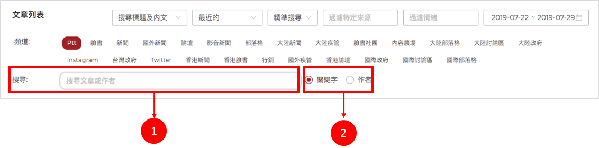
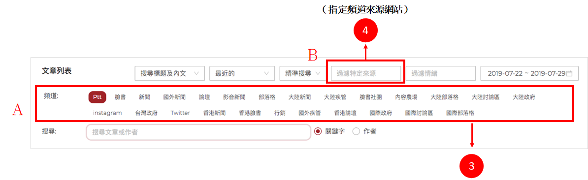
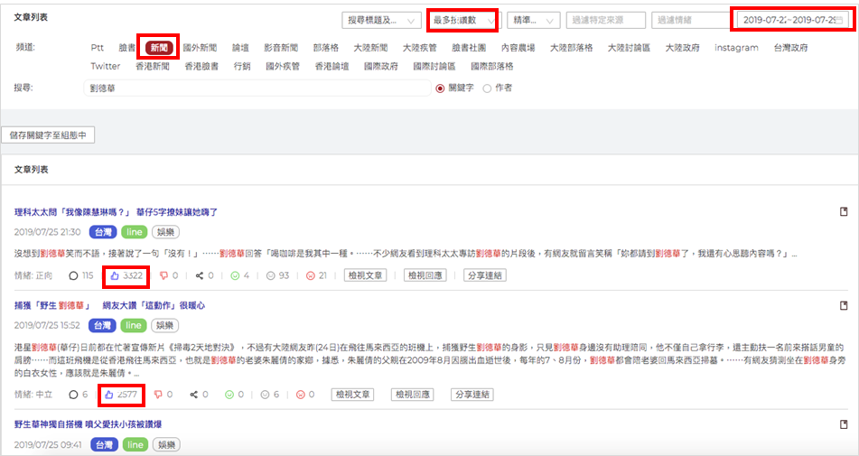

即時搜尋
InfoMiner的【即時搜尋】功能適合用在還未確定要在【關鍵字設定】下什麼關鍵字，只是想先初步了解相關文章。

搜尋步驟：
1.直接輸入欲觀測（文章關鍵字/文章作者）。
2.點選（關鍵字/作者）按鈕。

3.選擇頻道來源。
4.若想指定某個頻道來源網站，可點選【過濾特定來源】按鈕（例如：新聞頻道的蘋果新聞網網站），如下圖。

5.依照需求選擇工具列內容，彈性自訂篩選條件。

範例：劉德華近日於新聞頻道最多按讚數文章聲量為何？

如果我們還沒有想法要設定什麼關鍵字群，可以透過即時搜尋先了解一下該關鍵字相關聲量口碑，之後在到【監控設定】做更精確的關鍵字設定。